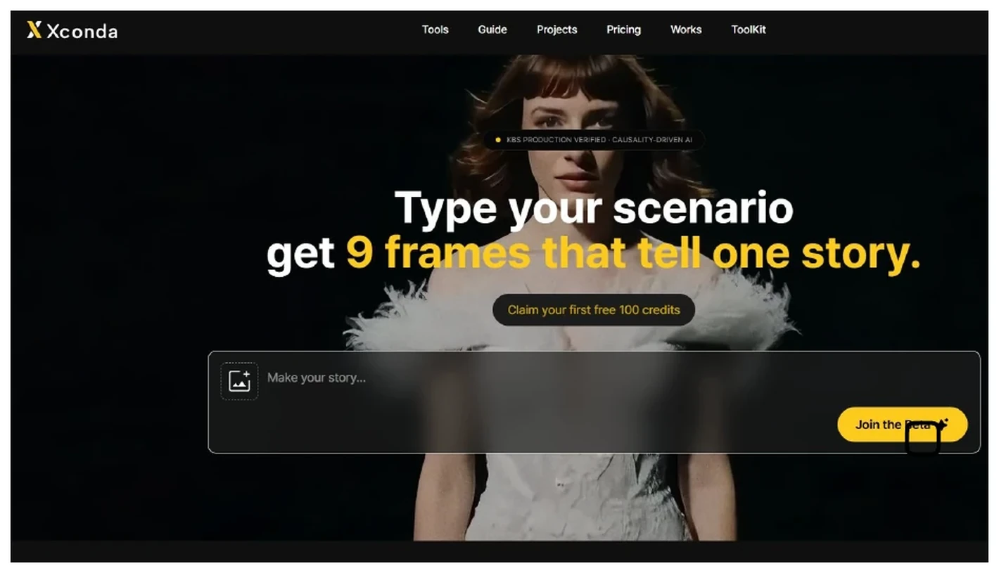
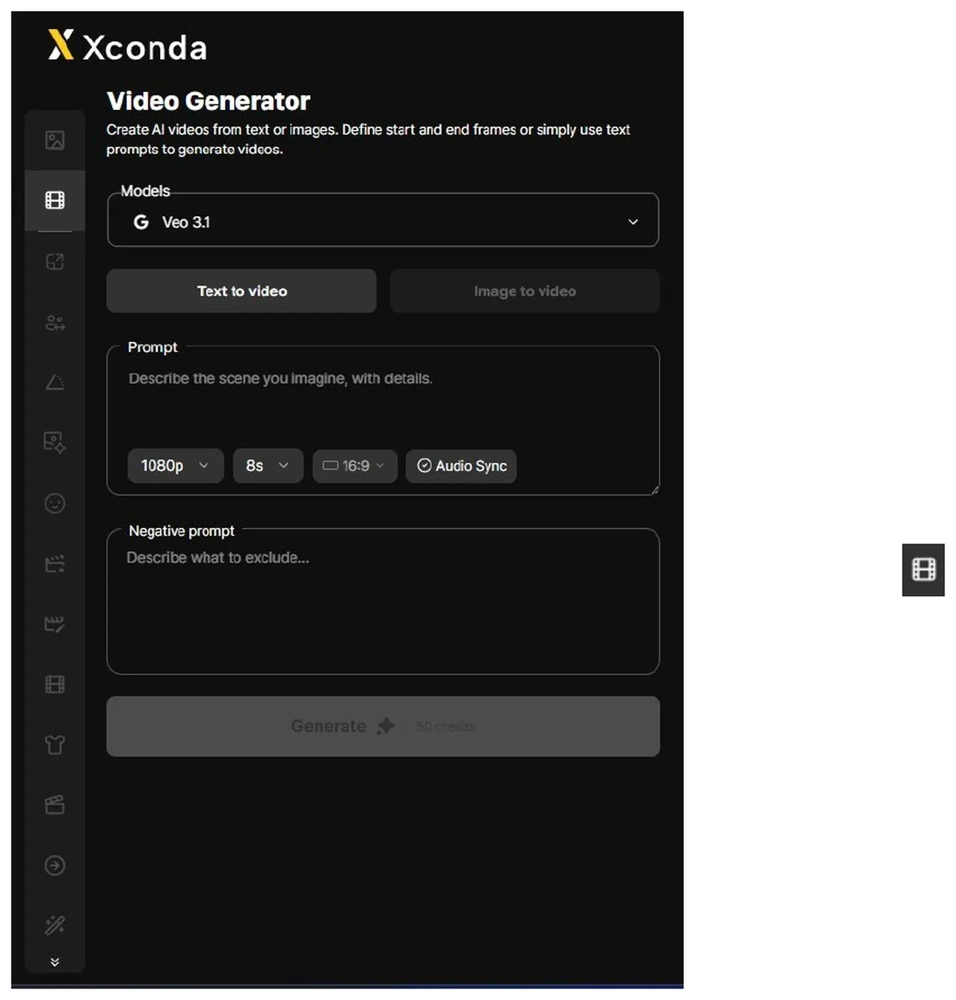
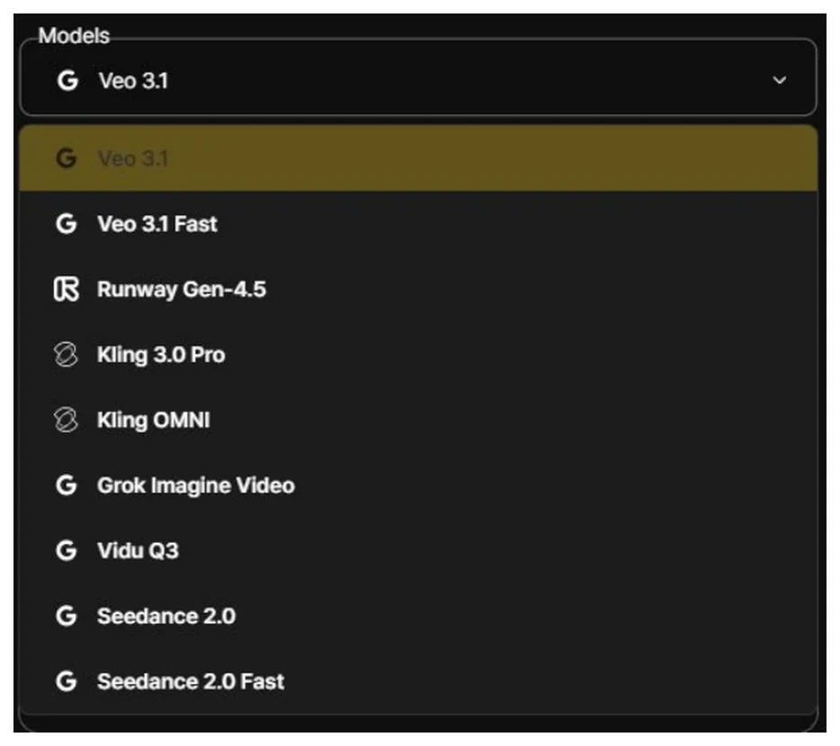
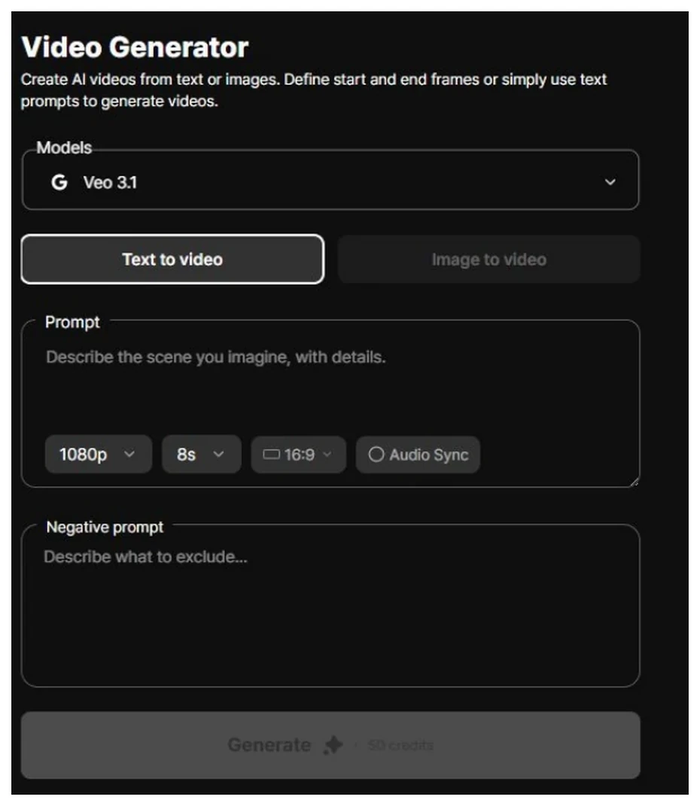
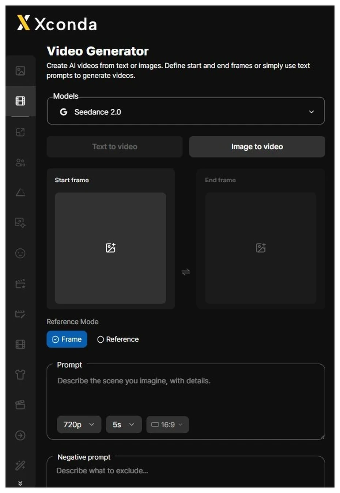
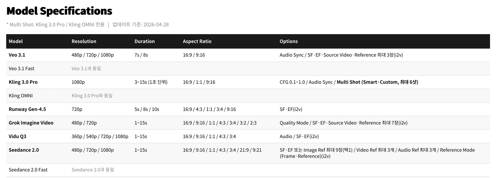
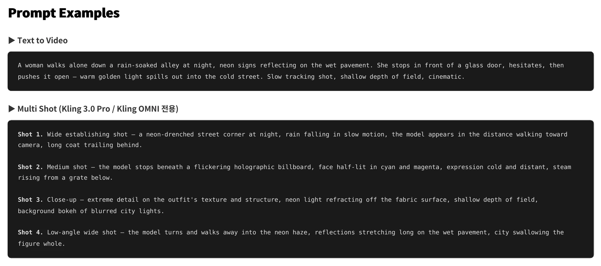
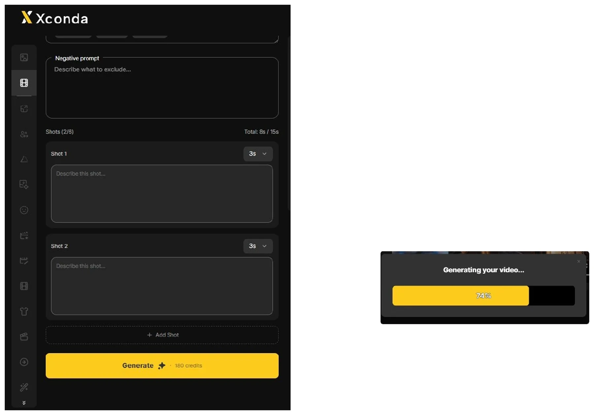
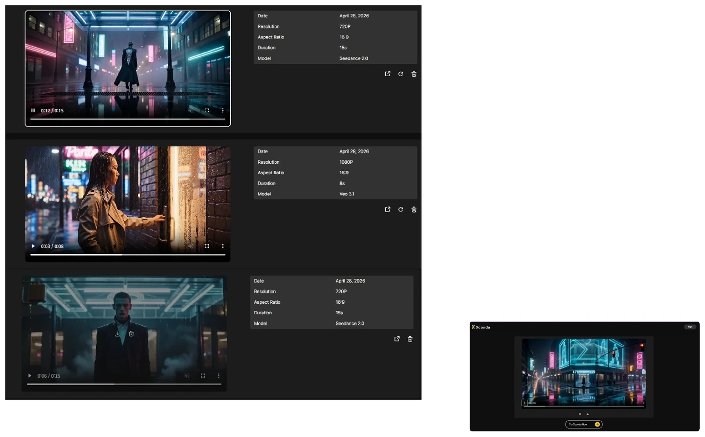

Click Tools at the top of the main screen. Every generation tool in Xconda is grouped under this Tools menu.

Click the icon in the second yellow-highlighted slot of the left vertical sidebar. This opens the Video Generator workspace.

Click the Models dropdown to choose a video engine. Options include Veo 3.1 / Veo 3.1 Fast, Runway Gen-4.5, Kling 3.0 Pro / Kling OMNI, Grok Imagine Video, Vidu Q3, and Seedance 2.0 / Seedance 2.0 Fast. (Model lineup may change — last updated 2026-04-28.)

Select the Text to video tab. Click the Prompt field and describe the scene you want to generate. You can set resolution (480p / 720p / 1080p), duration, and aspect ratio (varies by model). Use Negative Prompt to list elements you want excluded from the output.

Select the Image to video tab. Upload the opening shot in Start frame and the closing shot in End frame — the AI generates the scene in between. Reference Mode (Seedance 2.0 only): Frame uses the images as exact start/end frames, while Reference uses them as style, mood, and composition references.

Each model differs in supported resolution, duration, aspect ratio, and feature options. Check the specs before starting. Multi-Shot is exclusive to Kling 3.0 Pro and Kling OMNI. (Last updated 2026-04-28.)

Sample prompts for reference. For Text to Video: "A woman walks alone down a rain-soaked alley at night, neon signs reflecting on the wet pavement. She stops in front of a glass door, hesitates, then pushes it open — warm golden light spills out into the..." — describe scene, action, atmosphere, and lighting in concrete detail.

When all settings are ready, click the yellow Generate button at the bottom. For multi-shot, set each shot's duration in seconds in the Shots area and use + Add Shot to add more. Total length must stay within 15 seconds. Each generation costs 50 credits (180 credits for multi-shot). Progress is shown after pressing Generate; speed varies by model.

When generation completes, results appear as a list. The right panel shows Date / Resolution / Aspect Ratio / Duration / Model. Hit play for a preview, click the video itself for fullscreen. Hover over a video to reveal Save / Delete icons — Save downloads the file; the Share icon on the right sends it outside the app.
